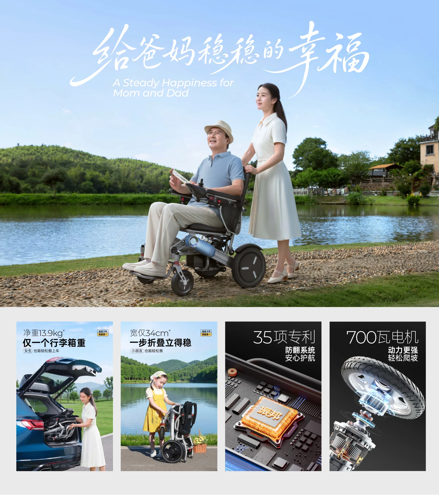
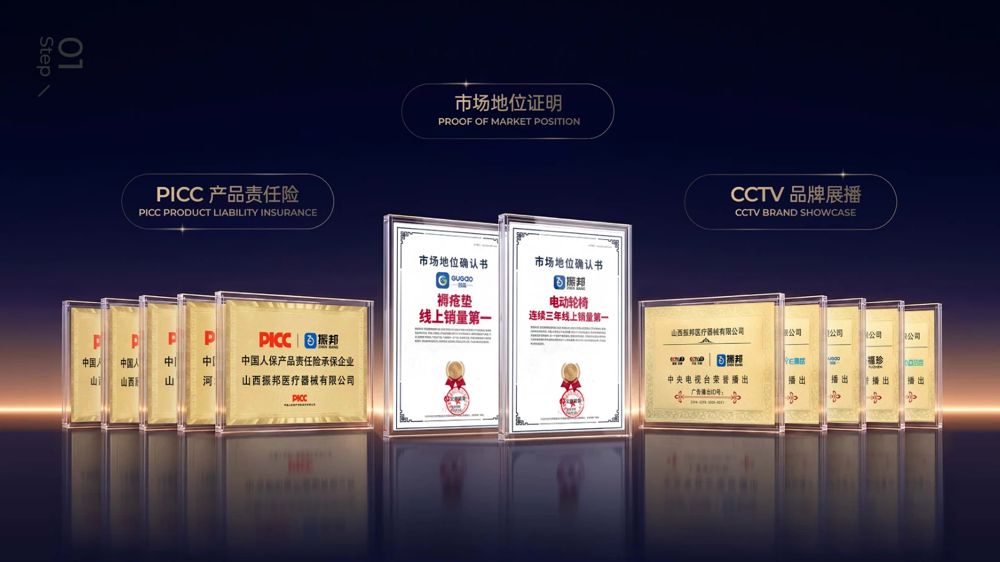
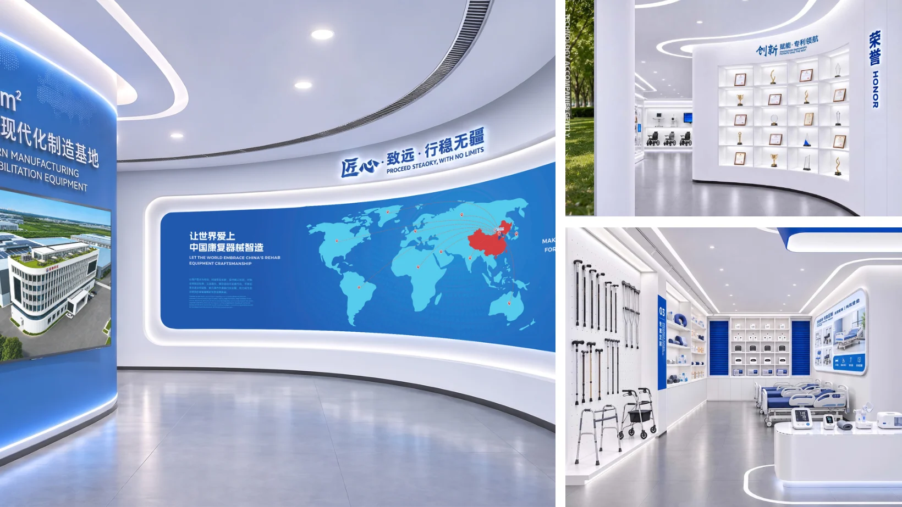

Step 01品牌矩阵与商业增长
宏瑞医疗多品牌矩阵
针对康复器械行业重参数、同质化和买用分离的难题，以品类策略与心智定位为两端，重新安排品牌分工、产品组合和全渠道表达。
- 我的职责
- 品牌企划经理 · 带领 14 人企划团队
- 项目范围
- 山西宏瑞医疗科技 · 2025.06–2026.10
Growth Strategy
品牌增长战略
从单品价格战，到 10 大品牌生态壁垒
轮椅主赛道覆盖不同价格带，居家康养与个护承接增量，海内外业务按品牌和渠道独立经营，再由制造品牌提供共同的信任依据。
- 品类策略
- 在轮椅主业之外，布局居家护理、个护、跨境及线下专渠，让不同业务分别承担守盘、拉高价值或拓展增量的任务。
- 心智定位
- 按家庭出行、价格敏感、居家护理等需求区分产品价值，让品牌在不同决策场景各有购买理由。
Competitive Strategy
竞争策略
四组业务各有分工
- 轮椅核心盘
- 振邦守大众市场，鹏岳切入中高端，孝航覆盖下沉市场，福珍夯实手动轮椅赛道。
- 康复与个护
- 顾高深耕护理床与防褥疮气床垫，每邦以护腰带切入个护，拓展新的使用场景。
- 跨境、药房与联营
- ZENBON 主攻亚马逊出海，喆高服务药房专渠，台铃开展异业代工联营。
- 制造能力背书
- 以冠驰科技呈现 26,000 ㎡自建智造基地，为前端品牌和大客户代工提供制造能力依据。
Product Strategy
产品策略
重构品线、引爆双轨爆品
把引流基本盘、中高端溢价和跨品类增量放进同一产品组合。
- 向上溢价与向外拓新
- 电动轮椅中高端产品围绕轻便折叠和外观体验。每邦以日常护腰需求进入个护赛道。
- 存量焕新与康养延展
- 振邦以场景化表达重塑主力款卖点。顾高从护理床和气床垫向更多居家康养场景延伸。


Channel Strategy
营销策略
打通抖红双擎种草、收割
围绕子女为父母挑选康复器械的信任顾虑，串联痛点种草、主动搜索和购买决策。
- 抖音与小红书分工
- 抖音结合达人测品与痛点短视频，承接看后搜和进店。小红书以蒲公英投放和 KOC 内容覆盖选购关注点，并通过 CID/UD 追踪站外成交。
- 权威背书与搜索承接
- 将销量地位确认、CCTV 双频道展播与 PICC 产品责任险用于信任表达，同时布局 GEO（生成式引擎优化）及海内外专渠。


Media Performance
投放全景
振邦抖红投放全景
统计周期为 2025 年 11 月至 2026 年 4 月，覆盖抖音、小红书投放结案及小红书站外电商归因。
- 双平台曝光及播放
- 1,001 万+
抖音播放 713.1 万，占 71.2%。小红书曝光 288.4 万，占 28.8%。
- 小红书站外归因成交
- 199 单
累计消耗 61,394 元。天猫 UD 148 单，京东 CID 51 单。
- 抖音星图 ROI
- 2.80
7 位星图达人，投入 1.3 万元，归因 GMV 3.64 万元。
- 蒲公英互动率
- 10.5%
对应报告中的振邦蒲公英投放。
- 总投入 23.73 万元
- 按报告图例，预算分布为抖音水下投放 36%、小红书蒲公英 32%、小红书水下投放 27%、抖音星图 5%。
- 内容与成本
- 抖音达人 47 位、小红书达人 53 位、小红书官号 130 篇。抖音综合 CPM 13.9 元，小红书蒲公英 CPV 0.27 元、CPE 2.65 元。
- 抖音分层播放
- 7 位星图达人累计播放 48 万以上，进店量增加 5.47 万。40 位水下达人累计播放 665 万以上，看后搜增加 4,594 人。
- 小红书站外成交拆分
- 天猫 UD 归因成交 148 单，消耗 12,422 元，均单成本 83.9 元。京东 CID 归因成交 51 单，消耗 48,972 元。
曝光与播放按原报告的双平台汇总口径呈现。星图 ROI 对应所列达人投放，站外成交对应 CID/UD 归因链路。
Brand Experience
感知系统
重塑痛点视觉锤、AIGC 降本提效
带领策划、设计、3D 与媒介协作，把产品价值转化成线上内容，把制造能力转化成线下体验。
- 3D 图解与 AIGC 内容生产
- 筹建 3D 团队，用场景和结构图讲清产品卖点，覆盖国内详情页与亚马逊 A+。将 AIGC 场景合成与 SOP 纳入日常交付。
- 展厅、导视与 6S
- 统筹冠驰科技的智造展厅、厂区导视、车间 6S 目视化及官网建设，为前端品牌提供统一的制造信任场景。


Business Impact
商业结果验证
销量创新高、声量进入头部、人效翻倍
- 核心品类表现
- 2 个销量第一
振邦电动轮椅连续 3 年销量第一，顾高防褥疮气床垫细分类目销量第一。福珍 2025 年销量同比增长 90%。
- 每邦上市表现
- 京东前五
每邦护腰带在上市半年后进入京东品类销量前五。
- 振邦品牌声量
- 品类前三
按简历记录，半年内振邦综合声量进入行业品类前三。
- 团队视觉产出效率
- 原来的 2 倍
AIGC 工作流与 SOP 推行后，电商详情页与视觉项目的内部产出效率提升。
数据来自项目记录。品类销量、声量与团队产出效率分别采用各自口径。